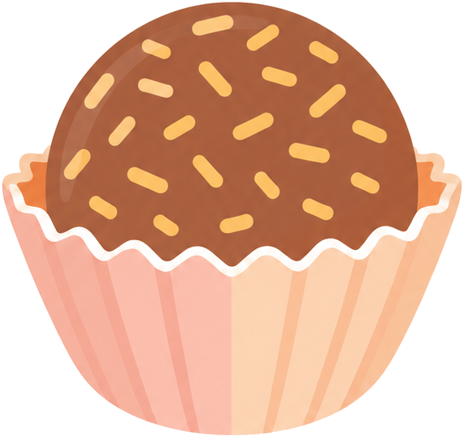

doce
A fully local, zero-config personal AI agent for macOS. No API keys. No accounts. No cloud dependency — everything runs entirely on your Mac.
Download doceRequires macOS · Apple Silicon

A fully local, zero-config personal AI agent for macOS. No API keys. No accounts. No cloud dependency — everything runs entirely on your Mac.
Download doceRequires macOS · Apple Silicon